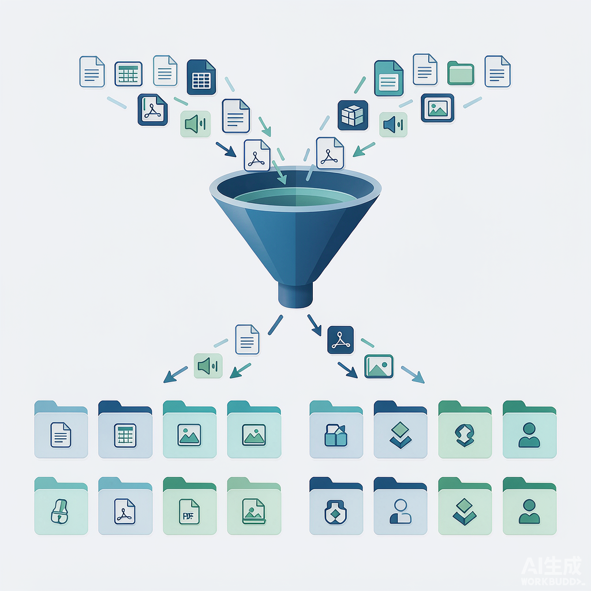
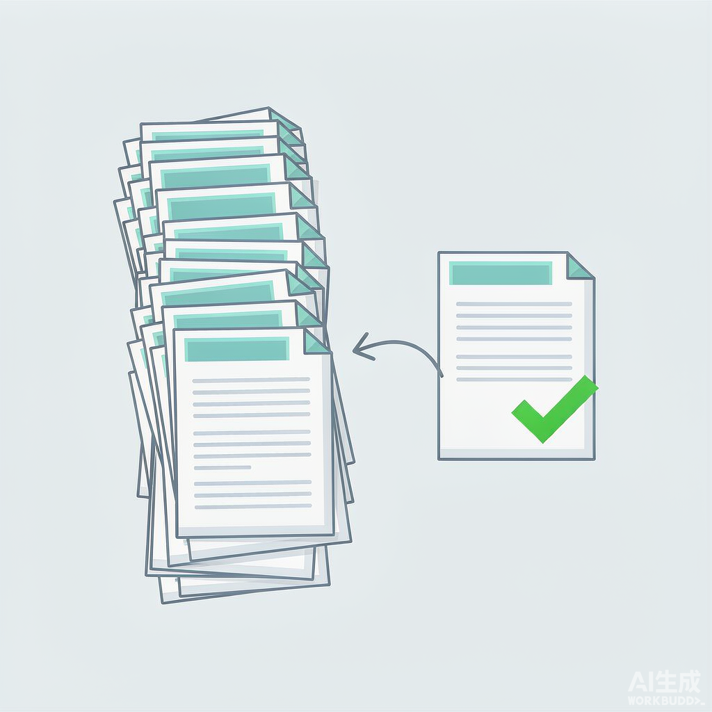

你有没有过这种时刻——
.dat；微信，早就不只是聊天工具了。它是很多人的「第二块硬盘」——只是这块硬盘，从来没人帮你整理过。
直到我遇见了它 👇
微信附件整理专家（也叫「微信收纳师」），是 WorkBuddy 平台上的一位 AI 专家。
一句话概括它的工作：
把微信 PC 端里散落各处的附件——文档、表格、图片、视频、压缩包、音频——安全、可控、可回溯地，从微信自己的文件夹里「请」出来，归类放好。
它不跟你聊天吹水，只干一件实事：让你的微信文件，从此找得到、看得懂、不重复、不丢失。
.dat，双击全是乱码。传统办法？手动一个个拖、一个个改名、一个个比对……一天都未必够。
不管你用的是 Windows、macOS 还是 Linux，微信 3.x 还是 4.x，它都能自动识别——连你电脑上登录过的多个微信账号，也会一并列出来让你选。你不用记路径、不用看版本，开口说一句「帮我整理微信附件」就行。
微信把图片、视频打包成 .dat 单字节加密容器。专家靠文件头特征反推密钥，自动还原成 jpgpnggifbmppdfzipmp4 等真实格式与扩展名。再也不会出现「整理出一堆打不开的 .dat」。

两个文件，名字天差地别但内容一模一样？它用 sha256 哈希比对，同内容只保留一份，其余标记出来告诉你「省了多少空间」。绝不靠文件名判断重复——这是它最靠谱的地方。

它默认进入「预览模式」，先把整理计划（每类多少、放哪、能省多少）列给你看，必须你点头说「执行」，它才复制。复制不移动、不删除源文件；还会记录已处理哈希，下次只跑新增，秒级增量重跑。
整理完，可把文件导入 WorkBuddy 资料库。文本类（pdfdocxxlsxtxtmdcsv）支持全文检索——跨设备搜文件名、搜正文关键词，一秒定位。
场景一｜按客户归档卷宗
你是律师或 IP 从业者，微信里攒了几十个客户的材料。一句「按客户归类」，材料自动分流进各客户文件夹，找谁的证据一目了然。
场景二｜找回历年文件
想找三年前那份报价单？按类型 + 年-月归档后，顺着文件夹就能翻到，不用再翻聊天记录。
场景三｜算清重复，释放空间
「先看看我微信里有多少重复文件、能省多少空间」——它给你一份去重报告，省下的空间以 MB 明明白白列出来。
很多人担心：整理微信文件，会不会动到我的聊天记录？会不会泄露隐私？微信附件整理专家是合规版，从设计上就把边界划得清清楚楚：
首次使用它会问你「按类型还是按客户」，记下来之后就不用再问。
微信替我们装下了太多东西，却从没替我们收拾过。现在，这位住在 WorkBuddy 里的收纳师，愿意替你把这件事，安安静静地做好。
安全、可控、可回溯——你的微信文件，值得被好好整理一次。